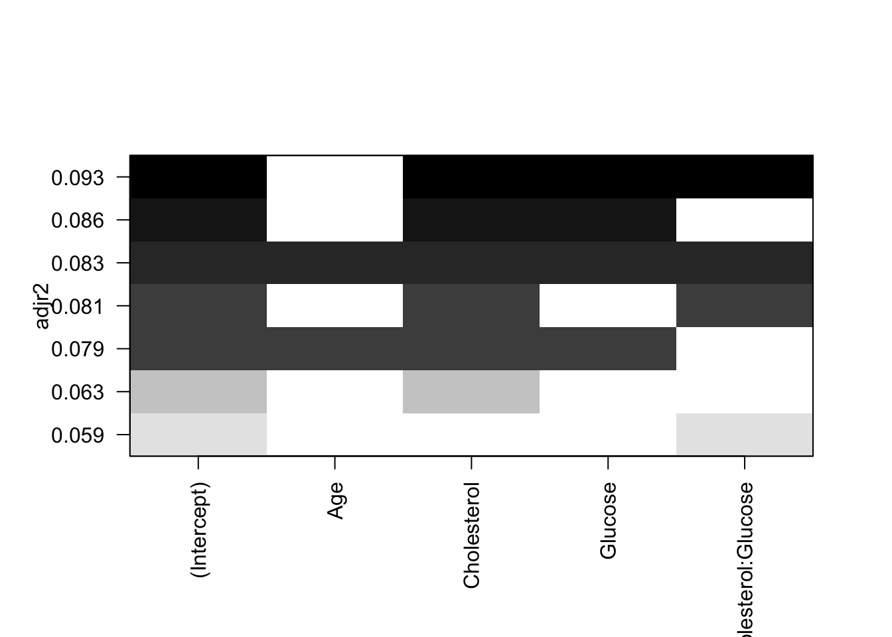

MeCoBi: Modelos de Regresión Lineal Múltiple
D. S. Fernández del Viso
Septiembre 2020
- Regresión Lineal Múltiple
- DATOS
- Modelo de regresión lineal múltiple
- MODELO 1
- Interpretación de resultados: coeficientes, estadísticos
- Pruebas de supuestos para regresión paramétrica usando el método de mínimos cuadrados (OLS, ordinary least square)
- PRUEBA DE NORMALIDAD
- PRUEBA DE AUTOCORRELACIÓN
- PRUEBA DE LINEALIDAD
- HOMOCEDASTICIDAD
- MULTICOLINEALIDAD
- Matriz de correlación entre variables
- MATRIZ DE CORRELACIONES
- MATRIZ DE REGRESIONES
- Interpretación de las gráficas de regresión
- Modelo con interacciones entre las variables predictoras
- Otro modelo con menos variables y con interacción
- Comparando modelos por sus coeficientes
- Selección de modelos por pasos
- Selección usando R-cuadrado ajustado y Mallow’s Cp para mejores modelos
- Referencias bibliográficas
Regresión Lineal Múltiple
Cuando tenemos más de una variable predictora (“independiente”"), la regresión lineal simple viene a ser una regresión múltiple. El modelo general es de la siguiente forma:
\[Y_j=\alpha+\beta_1X_{1j}+\beta_2X_{2j}+...+\beta_nX_{nj}\] La regresión polinomial es un caso especial de regresión múltiple, en el cual una misma variable predictora se expresa en forma polinomial (\(X\ y\ X^2,\ por\ ejemplo\)).
En esta sección estaremos considerando el caso de variables predictoras diferentes, y combinaciones de las mismas.
Usaremos el los datos bmi en el archivo mod_empiricos.xlsx. Estos son datos de individuos adultos entre 21 y 79 años, con las siguientes variables: BMI, índice de masa corporal (\(kg/m^{2}\)); Age, edad (años); Cholesterol, niveles de colesterol en sangre, (\(mg/dL\)); Glucose, niveles de glucosa en la sangre, (\(mg/dL\)).
DATOS
library(readxl)
reg.multiple <- read_excel("data/mod_empiricos.xlsx",
sheet = "bmi")
head(reg.multiple)## # A tibble: 6 x 4
## BMI Age Cholesterol Glucose
## <dbl> <dbl> <dbl> <dbl>
## 1 19.3 21 178 95
## 2 24.5 57 250 98
## 3 24.7 46 176 102
## 4 47.9 47 171 105
## 5 44.2 61 222 101
## 6 29.9 74 156 72Modelo de regresión lineal múltiple
Ahora debemos seleccionar la variable dependiente, y establecer un modelo de regresión múltiple, para evaluarlo estadísticamente. Usaremos como variable dependiente al índice de masa corporal (BMI) y el procedimiento lm() de R.
MODELO 1
modRM <- lm(BMI ~ Age + Cholesterol + Glucose,
data = reg.multiple)
summary(modRM)##
## Call:
## lm(formula = BMI ~ Age + Cholesterol + Glucose, data = reg.multiple)
##
## Residuals:
## Min 1Q Median 3Q Max
## -10.6255 -4.5473 -0.8179 3.7439 18.8116
##
## Coefficients:
## Estimate Std. Error t value Pr(>|t|)
## (Intercept) 16.81510 5.07180 3.315 0.00164 **
## Age 0.04103 0.05631 0.729 0.46939
## Cholesterol 0.04819 0.02487 1.938 0.05791 .
## Glucose 0.01974 0.01493 1.322 0.19188
## ---
## Signif. codes: 0 '***' 0.001 '**' 0.01 '*' 0.05 '.' 0.1 ' ' 1
##
## Residual standard error: 6.34 on 54 degrees of freedom
## Multiple R-squared: 0.127, Adjusted R-squared: 0.07855
## F-statistic: 2.62 on 3 and 54 DF, p-value: 0.06008# AIC
aic1 <- AIC(modRM)
sprintf("AIC-mod1 = %.2f", aic1)## [1] "AIC-mod1 = 384.68"Interpretación de resultados: coeficientes, estadísticos
- los estimados de los coeficientes resultaron positivos.
- el valor del intercepto es significativamente diferente de 0 (poco probable que la línea corte el origen).
- solamente el estimado del coeficiente para la variable Cholesterol es marginalmente significativo, o sea diferente de 0 (Pr = 0.05791).
- el coeficiente de determinación (\(R^{2}\)) nos indica la proporción de la variación en la variable dependiente que es explicada por las variables independientes, y encontranmos que es de 0.127 (12.7 %) solamente.
- un estadístico más adecuado en la regresión múltiple es el \(R^{2}-ajustado\), porque toma en cuenta el número de variables independientes integrado al modelo, y por lo tanto permite controlar una formulación exagerada del modelo, incluyendo más variables de las necesarias.
- el estadístico F (que prueba si en conjunto el modelo explica más la variación en el estimado de \(Y_i\), que el error aleatorio) resultó no-significativo, si consideramos el usual nivel de P = 0.05. En la regresión lineal simple, el valor de F es igual al de t, para el coeficiente de la variable independiente.
- El estadístico AIC (Akaike Information Criterion), indica el modelo con la menor pérdida de información y mayor simplicidad.
Pruebas de supuestos para regresión paramétrica usando el método de mínimos cuadrados (OLS, ordinary least square)
- Normalidad: Gráficamente: Q-Q plot; estadísticamente: prueba de Shapiro & Wilk
- Independencia: los valores de \(Y_j\) son independientes entre si, lo asumimos (no hay autocorrelación); prueba de Durbin-Watson.
- Linealidad: relación lineal entre variable dependiente y cada una de las independientes; gráficas individuales. Puede arreglarse con transformación; prueba de Box Tidwell.
- Homocedasticidad: varianza de la variable dependiente (residuales) no varía con los valores ajustados de la variable respuesta; gráfica de los residuales y prueba de varianza.
- Multicolinealidad: las variables independientes no deben estar correlacionadas entre si.
PRUEBA DE NORMALIDAD
Evaluación gráfica de normalidad de la variable dependiente.
library(EnvStats)
qqPlot(reg.multiple$BMI, add.line = TRUE, points.col = "blue", line.col = "red")Prueba estadística de normalidad Shapiro & Wilk (\(H_0:distribución\enspace normal\))
shapiro.test(reg.multiple$BMI)##
## Shapiro-Wilk normality test
##
## data: reg.multiple$BMI
## W = 0.96315, p-value = 0.07547PRUEBA DE AUTOCORRELACIÓN
La prueba de Durbin-Watson nos permite evaluar si ocurre autocorrelación entre los valores residuales de la variable dependiente. Por ejemplo, una variable que depende del tiempo, presenta autocorrelación. La \(H_0\) es que la autocorrelación en los residuales del modelo es 0.
library(car)
model <- lm(BMI ~ Age + Cholesterol + Glucose, data = reg.multiple)
dbt <- durbinWatsonTest(model, simulate = TRUE)
dbt## lag Autocorrelation D-W Statistic p-value
## 1 0.06609505 1.823275 0.534
## Alternative hypothesis: rho != 0PRUEBA DE LINEALIDAD
library(car)
boxTidwell(BMI ~ Age + Cholesterol + Glucose, data = reg.multiple)## MLE of lambda Score Statistic (z) Pr(>|z|)
## Age -19.8117 -0.8984 0.3690
## Cholesterol 20.2797 0.1879 0.8509
## Glucose -2.3134 0.1057 0.9158
##
## iterations = 10HOMOCEDASTICIDAD
La varianza de los residuales (error aleatorio) debe mantenerse constante en función de los valores esperados de la variable respuesta. Usaremos la prueba de varianza constante (Non-constant Variance Score Test), en la cual: \(H_0:la\ varianza\ es\ constante\ en\ el\ ámbito\ de\ la\ predicción\ de\ Y\).
# prueba de homocedasticidad
# prueba varianza constante de errores
ncvTest(modRM)## Non-constant Variance Score Test
## Variance formula: ~ fitted.values
## Chisquare = 0.02932531, Df = 1, p = 0.86403# gráfica de valores absolutos de los residuales - lineas de tendencia y de ajuste a los puntos
spreadLevelPlot(modRM)
##
## Suggested power transformation: 0.757141MULTICOLINEALIDAD
A continuación examinaremos las posibles relaciones entre variables, para analizar la presencia de multicolinealidad, usando correlaciones y gráficas de regresiones lineales simples.
Matriz de correlación entre variables
- Vamos a examinar la relación entre parejas de variables a la vez, y para esto crearemos una matriz de correlación entre todas las variables.
- La segunda matriz muestra la significancia (probabilidad de equivocarnos al rechazar \(H_0: r=0\)).
MATRIZ DE CORRELACIONES
library(Hmisc)
#matriz de correlación
reg_mult_matrix <- as.matrix(reg.multiple)
rcorr(reg_mult_matrix)## BMI Age Cholesterol Glucose
## BMI 1.00 0.19 0.28 0.22
## Age 0.19 1.00 0.17 0.27
## Cholesterol 0.28 0.17 1.00 0.08
## Glucose 0.22 0.27 0.08 1.00
##
## n= 58
##
##
## P
## BMI Age Cholesterol Glucose
## BMI 0.1614 0.0326 0.0952
## Age 0.1614 0.2029 0.0427
## Cholesterol 0.0326 0.2029 0.5373
## Glucose 0.0952 0.0427 0.5373MATRIZ DE REGRESIONES
#gráfica de regresiones en parejas, con línea de regresión
scatterplotMatrix(reg.multiple, ~ BMI + Age + Cholesterol + Glucose,
smooth = list(lty = 2), id = TRUE,
regLine = list(lty = 1, col = "red"),
col = "blue")
Interpretación de las gráficas de regresión
podemos observar la distribución de los valores de cada variable: curva de densidad, y ‘alfombra’ de distribución.
muestra los gráficos de puntos por pareja de variable (las unidades de los ejes se encuentran a los extremos de filas y columnas).
la línea de la regresión lineal simple aparece en rojo.
las líneas punteadas muestran una franja de ajuste no-paramétrico de los datos (Loess).
los puntos identificados son los que más se alejan del centro de los datos (distancia de Mahalonobis).
Modelo con interacciones entre las variables predictoras
- A partir de los resultados anteriores, vamos a considerar un modelo en el cual incorporemos las posibles interacciones entre variables.
- Una manera de hacerlo es creando variables en las que dos (o más) variables producen una variable de interacción, es decir que su efecto combinado es mayor que estando separadas.
- Para denotar interacción entre variables se usa el símbolo ( : ) Para incluir las variables solas y su interacción se utiliza el símbolo ( * )
MODELO 2
modRI <- lm(BMI ~ Age + Cholesterol*Glucose,
data = reg.multiple)
summary(modRI)##
## Call:
## lm(formula = BMI ~ Age + Cholesterol * Glucose, data = reg.multiple)
##
## Residuals:
## Min 1Q Median 3Q Max
## -10.9645 -4.6505 -0.4692 3.4753 18.6302
##
## Coefficients:
## Estimate Std. Error t value Pr(>|t|)
## (Intercept) -0.9488128 16.7669069 -0.057 0.955
## Age 0.0349834 0.0564484 0.620 0.538
## Cholesterol 0.1443108 0.0899841 1.604 0.115
## Glucose 0.1986009 0.1616392 1.229 0.225
## Cholesterol:Glucose -0.0009461 0.0008514 -1.111 0.271
##
## Residual standard error: 6.326 on 53 degrees of freedom
## Multiple R-squared: 0.1469, Adjusted R-squared: 0.08254
## F-statistic: 2.282 on 4 and 53 DF, p-value: 0.07258aic2 <- AIC(modRI)
sprintf("AIC-mod2 = %.2f", aic2)## [1] "AIC-mod2 = 385.35"PRUEBA DE VARIANZA CONSTANTE DE RESIDUALES
# prueba de homocedasticidad errores
ncvTest(modRI)## Non-constant Variance Score Test
## Variance formula: ~ fitted.values
## Chisquare = 0.001354017, Df = 1, p = 0.97065# gráfica de residuales
spreadLevelPlot(modRI)
##
## Suggested power transformation: 2.533026Análisis de los resultados
con este nuevo modelo con interacción, ninguno de los coeficientes resultó significativamente diferente de 0.
el \(R^{2}\) y el ajustado, aumentaron ligeramente, pero esto es usual al aumentar el número de variables, lo cual empieza realmente a sobre-ajustar la variación aleatoria al modelo.
la prueba de igualdad de varianza de los errores de las predicciones indica que se cumple el supuesto, aunque la gráfica muestra alguna desviación de la recta.
la selección de un modelo y sus variables es un proceso sin una regla fija.
Otro modelo con menos variables y con interacción
MODELO 3
library(car)
modRI2 <- lm(BMI ~ Cholesterol + Age:Glucose, data = reg.multiple)
summary(modRI2)##
## Call:
## lm(formula = BMI ~ Cholesterol + Age:Glucose, data = reg.multiple)
##
## Residuals:
## Min 1Q Median 3Q Max
## -10.5225 -4.6283 -0.8796 3.6945 18.8840
##
## Coefficients:
## Estimate Std. Error t value Pr(>|t|)
## (Intercept) 1.879e+01 4.645e+00 4.044 0.000165 ***
## Cholesterol 4.906e-02 2.441e-02 2.010 0.049322 *
## Age:Glucose 3.662e-04 2.057e-04 1.780 0.080625 .
## ---
## Signif. codes: 0 '***' 0.001 '**' 0.01 '*' 0.05 '.' 0.1 ' ' 1
##
## Residual standard error: 6.274 on 55 degrees of freedom
## Multiple R-squared: 0.1292, Adjusted R-squared: 0.09751
## F-statistic: 4.079 on 2 and 55 DF, p-value: 0.02229aic3 <- AIC(modRI2)
sprintf("AIC-mod3 = %.2f", aic3)## [1] "AIC-mod3 = 382.54"PRUEBA DE HOMOCEDASTICIDAD
# prueba de homogeneidad de varianza de errores
ncvTest(modRI2)## Non-constant Variance Score Test
## Variance formula: ~ fitted.values
## Chisquare = 0.07666205, Df = 1, p = 0.78187# residuales
spreadLevelPlot(modRI2)##
## Suggested power transformation: 0.9950719Modelo con las dos variables más correlacionadas inicialmente a BMI
MODELO 4
modRI3 <- lm(BMI ~ Cholesterol + Glucose, data = reg.multiple)
summary(modRI3)##
## Call:
## lm(formula = BMI ~ Cholesterol + Glucose, data = reg.multiple)
##
## Residuals:
## Min 1Q Median 3Q Max
## -10.125 -4.748 -1.134 3.321 18.832
##
## Coefficients:
## Estimate Std. Error t value Pr(>|t|)
## (Intercept) 17.95236 4.80502 3.736 0.000446 ***
## Cholesterol 0.05098 0.02447 2.083 0.041902 *
## Glucose 0.02254 0.01437 1.569 0.122449
## ---
## Signif. codes: 0 '***' 0.001 '**' 0.01 '*' 0.05 '.' 0.1 ' ' 1
##
## Residual standard error: 6.313 on 55 degrees of freedom
## Multiple R-squared: 0.1185, Adjusted R-squared: 0.08641
## F-statistic: 3.696 on 2 and 55 DF, p-value: 0.0312aic4 <- AIC(modRI3)
sprintf("AIC-mod4 = %.2f", aic4)## [1] "AIC-mod4 = 383.25"PRUEBA DE HOMOCEDASTICIDAD
# homocedasticidad
ncvTest(modRI3)## Non-constant Variance Score Test
## Variance formula: ~ fitted.values
## Chisquare = 0.2490362, Df = 1, p = 0.61775# residuales
spreadLevelPlot(modRI3)##
## Suggested power transformation: 1.818741Comparando modelos por sus coeficientes
Una manera de comparar visualmente modelos (en realidad sus coeficientes) es usar el paquete coefplot, en conjunto con ggplot2, para crear una gráfica de los coeficientes estimados de cada variable (sola o de interacción), en cada modelo y detectar los que son diferentes de 0, y los modelos que los contienen.
GRAFICA DE COEFICIENTES
library(ggplot2)
library(coefplot)
#cálculo para todos los modelos
modbmi1 <- lm(BMI ~ Age + Cholesterol + Glucose, data=reg.multiple)
modbmi2 <- lm(BMI ~ Age + Glucose + Cholesterol + Glucose*Cholesterol, data=reg.multiple)
modbmi3 <- lm(BMI ~ Cholesterol + Age*Glucose, data=reg.multiple)
modbmi4 <- lm(BMI ~ Cholesterol + Glucose, data=reg.multiple)
#comparando coeficientes de todos los modelos
multiplot(modbmi1, modbmi2, modbmi3, modbmi4, pointSize = 2, intercept=FALSE)## Warning: It is deprecated to specify `guide = FALSE` to remove a guide. Please
## use `guide = "none"` instead.
## Warning: It is deprecated to specify `guide = FALSE` to remove a guide. Please
## use `guide = "none"` instead.
Selección de modelos por pasos
Existen métodos para seleccionar automáticamente el mejor modelo, a base de estadísticos indicadores, y que conlleva un procedimiento iterativo. Uno de estos procedimientos es conocido como ‘stepwise’ (por pasos), y aunque no es el más aceptado en la actualidad, ha sido muy usado y es una buena manera de ilustrar el procedimiento, usando nuestros datos.
En este procedimiento el proceso de selección se basa en mantener el modelo con el menor valor del estadístico AIC (Akaike Information Criterion), que indica el modelo con la menor pérdida de información y mayor simplicidad. En el proceso se parte de un modelo nulo (no efecto de predictores) y hasta un modelo muy complejo, incluyendo interacciones. Las variables se incluyen y se quitan, y cada vez se recalcula AIC, hasta obtener el modelo que mantiene el mínimo valor de AIC.
PROCEDIMIENTO “STEPWISE”
#formulación de un modelo nulo y un modelo completo
modNulo <- lm(BMI ~ 1, data = reg.multiple)
modFull <- lm(BMI ~ Age + Cholesterol + Glucose + Age*Cholesterol + Age*Glucose + Cholesterol*Glucose,
data = reg.multiple)
#procedimiento stepwise
bmistep <- step(modNulo,
scope = list(lower=modNulo, upper=modFull,
direction="both"))## Start: AIC=219.97
## BMI ~ 1
##
## Df Sum of Sq RSS AIC
## + Cholesterol 1 196.462 2289.8 217.19
## + Glucose 1 121.605 2364.6 219.06
## + Age 1 86.322 2399.9 219.92
## <none> 2486.2 219.97
##
## Step: AIC=217.19
## BMI ~ Cholesterol
##
## Df Sum of Sq RSS AIC
## + Glucose 1 98.063 2191.7 216.66
## <none> 2289.8 217.19
## + Age 1 49.203 2240.6 217.93
## - Cholesterol 1 196.462 2486.2 219.97
##
## Step: AIC=216.66
## BMI ~ Cholesterol + Glucose
##
## Df Sum of Sq RSS AIC
## <none> 2191.7 216.66
## + Cholesterol:Glucose 1 55.387 2136.3 217.17
## - Glucose 1 98.063 2289.8 217.19
## + Age 1 21.337 2170.3 218.09
## - Cholesterol 1 172.920 2364.6 219.06bmistep##
## Call:
## lm(formula = BMI ~ Cholesterol + Glucose, data = reg.multiple)
##
## Coefficients:
## (Intercept) Cholesterol Glucose
## 17.95236 0.05098 0.02254Selección del modelo
Igual que con el procedimiento de tanteo inicial, encontramos este modelo como el que reúne las características que lo favorecen.
modST <- lm(formula = BMI ~ Cholesterol + Glucose, data = reg.multiple)
summary(modST)##
## Call:
## lm(formula = BMI ~ Cholesterol + Glucose, data = reg.multiple)
##
## Residuals:
## Min 1Q Median 3Q Max
## -10.125 -4.748 -1.134 3.321 18.832
##
## Coefficients:
## Estimate Std. Error t value Pr(>|t|)
## (Intercept) 17.95236 4.80502 3.736 0.000446 ***
## Cholesterol 0.05098 0.02447 2.083 0.041902 *
## Glucose 0.02254 0.01437 1.569 0.122449
## ---
## Signif. codes: 0 '***' 0.001 '**' 0.01 '*' 0.05 '.' 0.1 ' ' 1
##
## Residual standard error: 6.313 on 55 degrees of freedom
## Multiple R-squared: 0.1185, Adjusted R-squared: 0.08641
## F-statistic: 3.696 on 2 and 55 DF, p-value: 0.0312Selección usando R-cuadrado ajustado y Mallow’s Cp para mejores modelos
Otro método visual de selección, basado en el \(R^{2}-ajustado\) y en Cp (Mallow’s Cp):
library(leaps)
modCp <- regsubsets(BMI ~ Age + Cholesterol + Glucose + Cholesterol*Glucose, data = reg.multiple, nbest = 2)
plot(modCp, scale="adjr2")
plot(modCp, scale="Cp")
Interpretación
El mejor modelo con R-cuadrado ajustado está en la parte superior, y contiene Cholesterol, Glucose y su interacción.
Para el caso del estadístico Cp, al igual que con el AIC, el valor más bajo representa el mejor modelo, en este caso uno de Intercept, Cholesterol y Glucose. En general el valor de Cp se acerca al modelo con un número similar de parámetros (incluyendo el intercepto), en nuestro caso tres.
Referencias bibliográficas
Kabacoff, R. I. 2015. R in Action. Data analysis and graphics with R. Manning Publications Co., Shelter Island, NY, USA.
Lander, J. P. 2014. R for everyone. Pearson Education, Inc. Crawfordsville, Indiana, USA.
Suárez, E., Pérez, C.M., Rivera, R., Martínez, M.N. 2017. Applications of Regression Models in Epidemiology. John Wiley & Sons, Inc., Hoboken, New Jersey, USA.